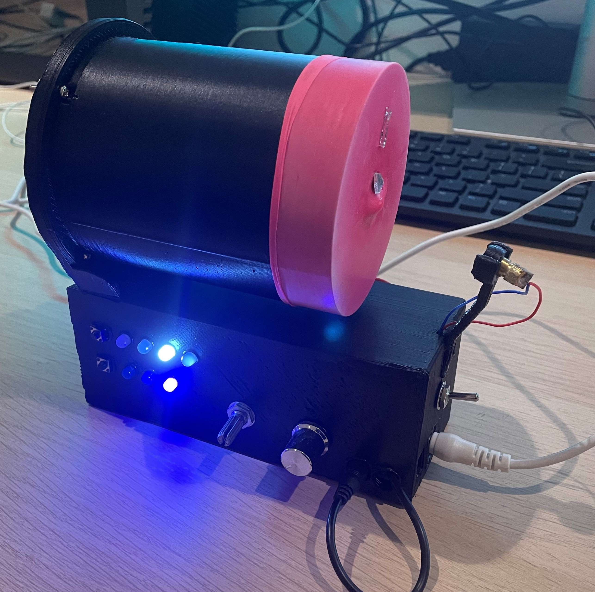

Acoustic Resonator

This project was Inspired by Steve Mould’s video where he demonstrates what a laser looks like when reflected off a vibrating membrane.
The goal of this project was to create an “all in one” device that can be assembled quickly. The device can adapt to diverse membrane shapes and allows for easy adjustment of the signal (frequencies, beats and amplitudes).
A cylinder has the speaker attached to it at one end and a rubber membrane attached at the other. The length of the cylinder ensures that the resonant frequency is within the frequency band of the Arduino that controls it. This allows for larger distortion in the membrane. A laser then shines on a mirror that is glued to the rubber membrane. As the membrane shakes, the lasers reflects, creating intricate patterns. These patterns represent the change in gradient over time at the point the mirror is located.
I built and designed the enclosure, membrane shape, and interface on SolidWorks. The interface consisted of white and blue LEDs, 2 buttons, and 2 potentiometers. The buttons toggle the LEDs through the array. The white (top) LEDs correspond with a channel. Each channel has a frequency, phase, and amplitude that can be adjusted. When you combine all the channels together you can form beats.
Example: Say you want all channels off except the second channel, which you want set to a high frequency, you would:
- Toggle to the blue LED with its button until you reach the second LED in the row. You can now edit the amplitude of the channel with the potentiometer.
- Toggle the white LED to each channel (1,3, and 4) and set the potentiometer to zero.
- Now toggle the blue LED to the initial location (you are now controlling the frequency). Select the second channel and turn the potentiometer up until the frequency you want is reached.
My friend, Aigne, and myself worked on the circuit together. We powered a speaker with a speaker driver and controlled its signal with some homemade circuits, a DAC, and an Arduino. One of the problems we faced involved the refresh rate of the whole system combined. While all components have adequate clock speeds, the communication used (I2C) and the computation required meant that we were only able to set frequencies as high as 800-1000Hz. Some improvements were made by generating the wave form only once, thus reducing the delay of the signal. I believe further improvements could be made to the frequency bandwidth by adjusting the lower-level Arduino code, getting the refresh cycle even closer to the clock speed. Also, a different communication protocol could be used to achieve a higher bandwidth, if a new iteration was done.